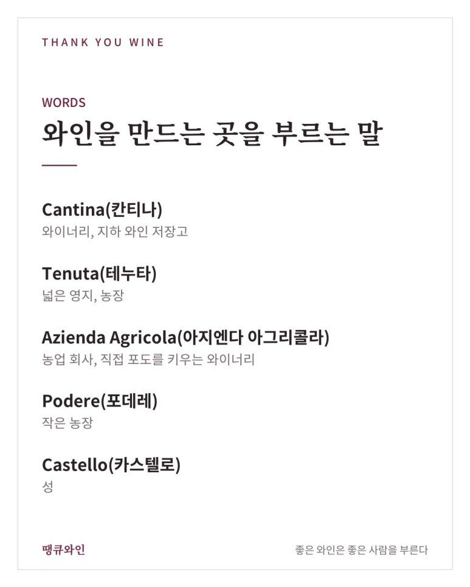
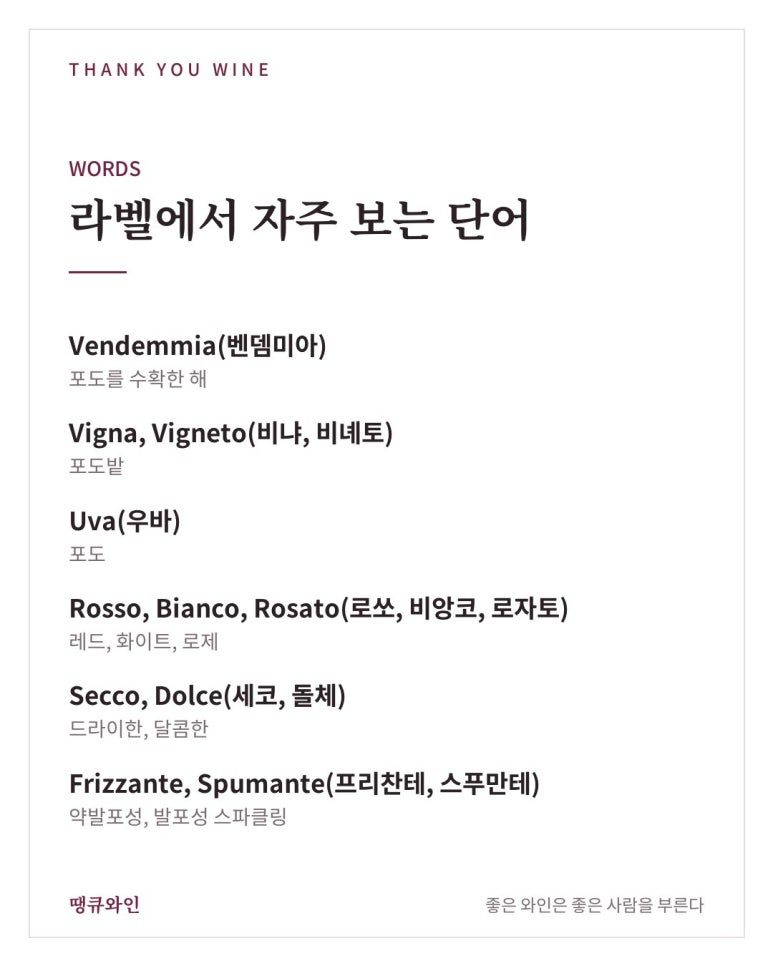
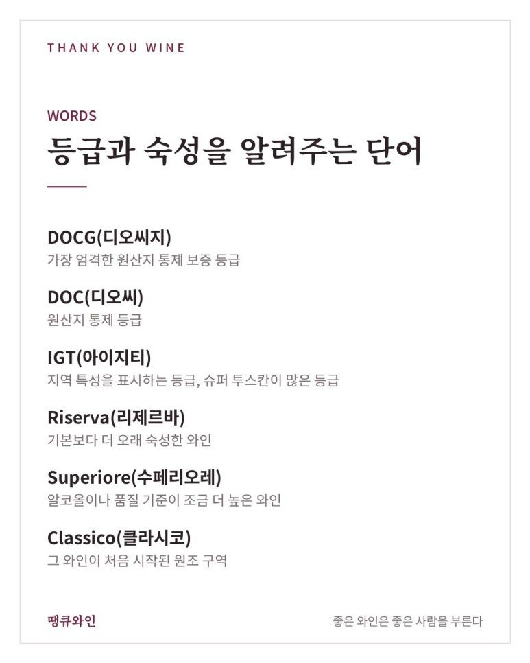
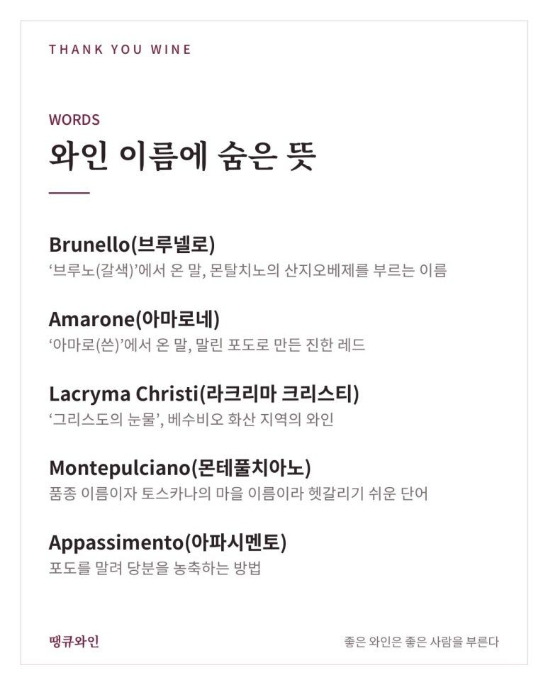
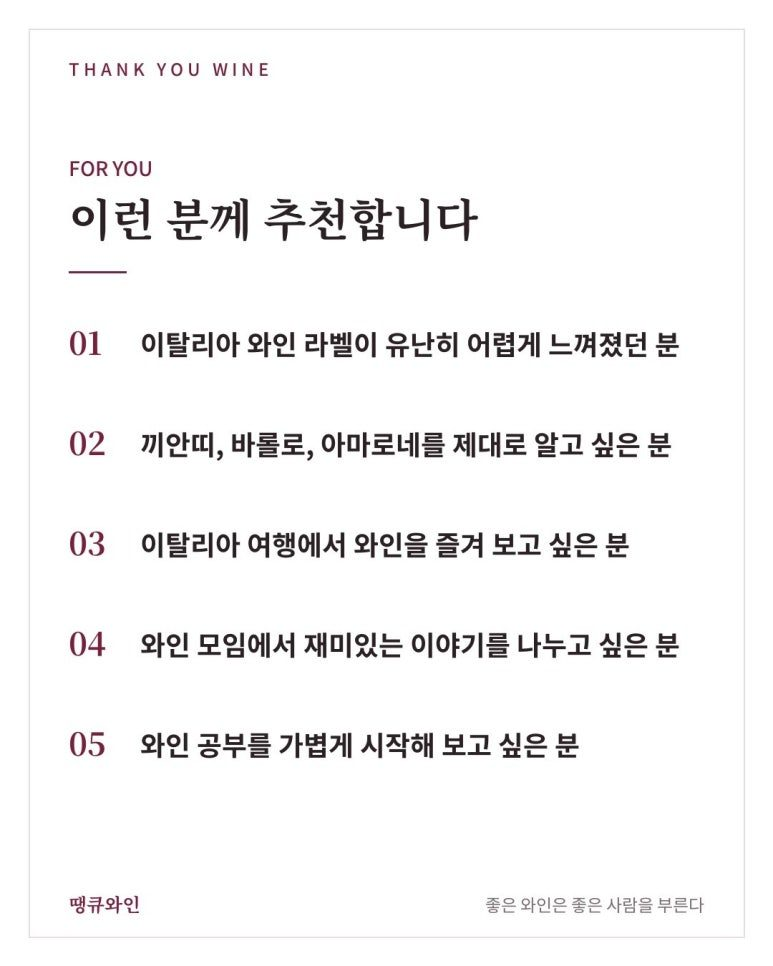
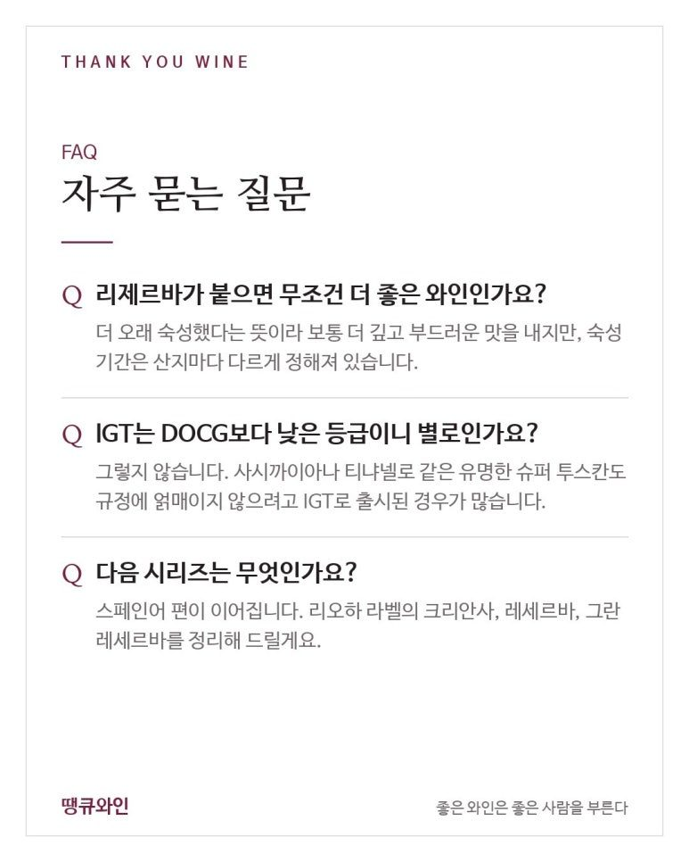

와인으로 배우는 이탈리아어
끼안띠·바롤로·아마로네, 라벨이 술술 읽히는 와인 이탈리아어
와인으로 배우는 이탈리아어는 몇 가지 단어만 알아도 끼안띠, 바롤로, 아마로네 라벨이 술술 읽힌다는 것이에요.
와인을 마시다 보면 자연스럽게 외국어 단어를 하나둘 알게 됩니다.
‘와인으로 배우는 외국어’ 시리즈, 두 번째는 이탈리아어입니다.
이탈리아는 20개 주 전역에서 와인을 만드는 나라라, 라벨에 적힌 단어도 정말 다양한데요.
몇 가지 단어만 알아도 끼안띠, 바롤로, 아마로네 같은 와인이 훨씬 친근하게 느껴질 거예요.
무엇보다 중요한 포인트는 바로,
몇 가지 단어만 알아도 끼안띠, 바롤로, 아마로네 라벨이 술술 읽힌다는 것.

한눈에 보는 와인 이탈리아어
- Cantina(칸티나)
- 와이너리, 와인 저장고
- Riserva(리제르바)
- 더 오래 숙성한 와인
- Classico(클라시코)
- 원조 생산 구역
- Salute(살루테)
- 건배! 건강을 위하여
와인을 만드는 곳을 부르는 말
이탈리아 와인 라벨에는 와이너리를 부르는 단어가 여러 가지 있습니다.
- Cantina(칸티나): 와이너리, 지하 와인 저장고
- Tenuta(테누타): 넓은 영지, 농장
- Azienda Agricola(아지엔다 아그리콜라): 농업 회사, 직접 포도를 키우는 와이너리
- Podere(포데레): 작은 농장
- Castello(카스텔로): 성

땡큐와인에서 소개했던 ‘테누타 일 코르노’도 ‘일 코르노 영지’라는 뜻이랍니다.
라벨에서 자주 보는 단어
- Vendemmia(벤뎀미아): 포도를 수확한 해
- Vigna, Vigneto(비냐, 비녜토): 포도밭
- Uva(우바): 포도
- Rosso, Bianco, Rosato(로쏘, 비앙코, 로자토): 레드, 화이트, 로제
- Secco, Dolce(세코, 돌체): 드라이한, 달콤한
- Frizzante, Spumante(프리찬테, 스푸만테): 약발포성, 발포성 스파클링

‘돌체’는 디저트 이름에도 자주 쓰이는 단어라 익숙하실 거예요.
등급과 숙성을 알려주는 단어
이탈리아 와인은 산지 등급과 숙성 기간을 라벨에 함께 적습니다.
- DOCG(디오씨지): 가장 엄격한 원산지 통제 보증 등급
- DOC(디오씨): 원산지 통제 등급
- IGT(아이지티): 지역 특성을 표시하는 등급, 슈퍼 투스칸이 많은 등급
- Riserva(리제르바): 기본보다 더 오래 숙성한 와인
- Superiore(수페리오레): 알코올이나 품질 기준이 조금 더 높은 와인
- Classico(클라시코): 그 와인이 처음 시작된 원조 구역

그래서 ‘끼안띠 클라시코 리제르바’는 끼안띠의 원조 구역에서 만들어 더 오래 숙성한 와인이라는 뜻이 됩니다.
→ 루피노, 리제르바 두칼레 끼안티 클라시코 리제르바 2021
와인 이름에 숨은 뜻
이탈리아 와인 이름에는 재미있는 뜻이 많이 숨어 있습니다.
- Brunello(브루넬로): ‘브루노(갈색)’에서 온 말, 몬탈치노의 산지오베제를 부르는 이름
- Amarone(아마로네): ‘아마로(쓴)’에서 온 말, 말린 포도로 만든 진한 레드
- Lacryma Christi(라크리마 크리스티): ‘그리스도의 눈물’, 베수비오 화산 지역의 와인
- Montepulciano(몬테풀치아노): 품종 이름이자 토스카나의 마을 이름이라 헷갈리기 쉬운 단어
- Appassimento(아파시멘토): 포도를 말려 당분을 농축하는 방법

특히 몬테풀치아노는 ‘몬테풀치아노 다브루초’는 품종 이름, ‘비노 노빌레 디 몬테풀치아노’는 마을 이름이라 와인 애호가들도 자주 헷갈리는 단어입니다.
재미있는 이름의 와인, Est! Est!! Est!!!
이탈리아에는 이름에 느낌표가 세 번이나 들어가는 와인도 있습니다.
전해지는 이야기에 따르면, 옛날 한 주교가 로마로 가는 길에 하인을 먼저 보내 맛있는 와인이 있는 곳마다 문에 ‘Est(여기 있다)’라고 적게 했는데요.
어느 마을의 와인이 너무 맛있어서 하인이 ‘Est! Est!! Est!!!’라고 세 번이나 적었다고 합니다.
그 와인이 지금도 라치오 지역에서 같은 이름으로 만들어지고 있습니다.
와인 자리에서 바로 쓰는 이탈리아어
- Salute!(살루테): 건배! 건강을 위하여
- Cin cin!(친친): 잔을 부딪칠 때 하는 가벼운 건배
- Enoteca(에노테카): 와인샵, 와인바
- Enologo(에놀로고): 와인 양조 전문가
다음 와인 모임에서는 “친친!” 하고 잔을 부딪쳐 보세요.
와인 이탈리아어, 이런 분께 추천합니다
- 이탈리아 와인 라벨이 유난히 어렵게 느껴졌던 분
- 끼안띠, 바롤로, 아마로네를 제대로 알고 싶은 분
- 이탈리아 여행에서 와인을 즐겨 보고 싶은 분
- 와인 모임에서 재미있는 이야기를 나누고 싶은 분
- 와인 공부를 가볍게 시작해 보고 싶은 분


자주 묻는 질문
리제르바가 붙으면 무조건 더 좋은 와인인가요?
더 오래 숙성했다는 뜻이라 보통 더 깊고 부드러운 맛을 내지만, 숙성 기간은 산지마다 다르게 정해져 있습니다. 취향에 따라 신선한 기본 와인을 더 좋아하는 분도 많습니다.
IGT는 DOCG보다 낮은 등급이니 별로인가요?
그렇지 않습니다. 사시까이아나 티냐넬로 같은 유명한 슈퍼 투스칸도 규정에 얽매이지 않으려고 IGT로 출시된 경우가 많습니다.
다음 시리즈는 무엇인가요?
스페인어 편이 이어집니다. 리오하 라벨의 크리안사, 레세르바, 그란 레세르바를 정리해 드릴게요.
결국 와인 이탈리아어의 매력은 ‘이름 속 이야기’입니다
이탈리아 와인 이름 속에는 마을, 품종, 그리고 오래된 전설이 함께 담겨 있습니다.
그래서 저는 와인 이탈리아어를
“한 병마다 이야기 하나씩 따라오는 단어장”
이라고 소개하고 싶습니다.
다음 이탈리아 와인을 열 때, 라벨 속 단어 하나를 찾아보며 “친친!” 해 보세요.
이 글은 땡큐와인 네이버 블로그에 먼저 올린 글이에요.